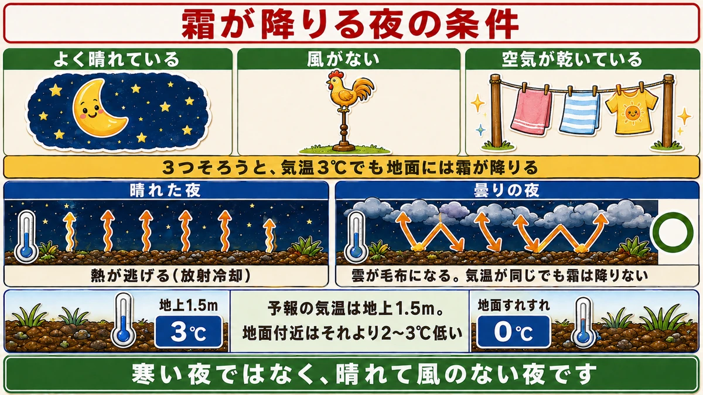
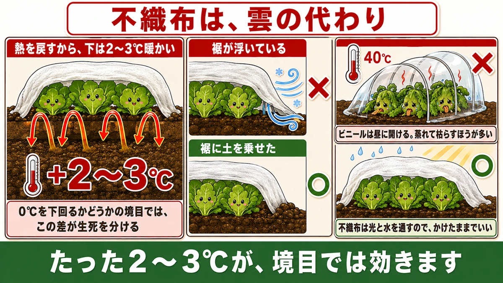
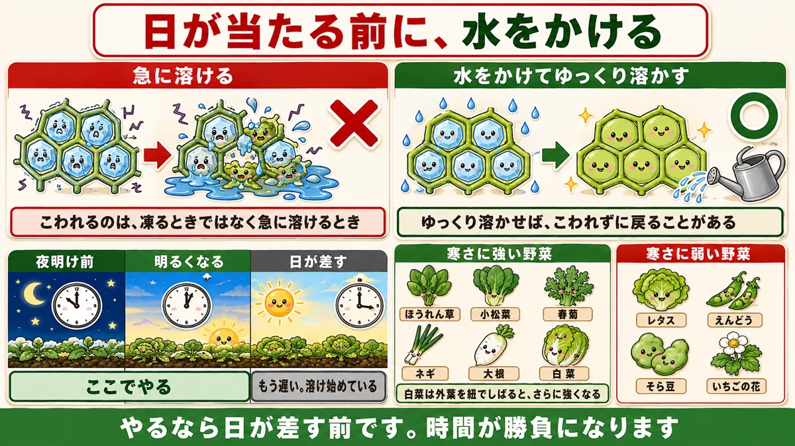

晴れた朝ほど、霜は降ります❄️ 曇りの夜は安全な理由

❄️「同じ畑なのに、枯れた株と無事な株があります」
❄️「昨日より寒くなかったのに、今朝だけ霜が降りていた」
❄️「不織布って、そんなに効くんですか？」
どうも、8150（えいこう）です🌱 家庭菜園歴8年、理科の教員免許を持っていて、有機・無農薬で野菜を育てています。
今日は、霜の話です。
先に、この記事でいちばん言いたいことを言っておきますね。
★霜が降りるのは、寒い夜ではありません。風のない、よく晴れた夜です。
気温が同じでも、★曇っていれば霜は降りません。ここが分かると、「今夜は危ない」が前の日に読めるようになります。
霜が降りる3つの条件

この3つがそろった夜だけ
- ★よく晴れている
- ★風がない
- ★空気が乾いている
3つそろうと、★気温が3℃くらいでも地面には霜が降ります。天気予報の気温は地上1.5mで測っているので、★地面付近はそれより2〜3℃低いからです。
★「予報が3℃だから大丈夫」は危ないんです。
なぜ晴れた夜のほうが冷えるのか
昼のあいだ、地面は太陽で暖められています。★夜になると、その熱を空へ向かって放り出します。放射冷却と呼びます。
★このとき、雲があると熱がはね返されて地面に戻ってきます。毛布をかけているのと同じです。
★晴れていると、熱はそのまま宇宙へ逃げます。だから晴れた夜ほど冷えます。
風があるときも霜は降りにくくなります。★空気がかき混ぜられて、地面付近だけが冷えることがなくなるからです。
不織布1枚が、なぜ効くのか

熱を逃がさない毛布になる
さっきの話とつながります。★不織布は、雲の代わりです。
地面から逃げようとする熱を、不織布がはね返して下に戻します。★これだけで、下の温度は2〜3℃高くなります。
たった2〜3℃ですが、★0℃を下回るか下回らないかの境目では、この差が生死を分けます。
かけ方は「べたがけ」でいい
支柱を立ててトンネルにしなくても構いません。★野菜の上に、直接ふわっとかけるだけで効きます。べたがけと呼びます。
大事なのは★裾です。裾が浮いていると、そこから冷気が入って意味がなくなります。★周りに土を乗せるか、マルチ押さえで留めてください。
★昼に外す必要はありません。不織布は光と水を通すので、かけたままで大丈夫です。
ビニールは、逆効果になることがある
透明のビニールをかける方は、★昼に必ず開けてください。
日が当たると中が40℃を超えます。★それで蒸れて枯らすほうが、霜より多いくらいです。
★かけっぱなしにできるのは不織布、開け閉めが要るのがビニール。ここを混同しないでください。
朝の一手で、助かる株があります

霜がついた葉に、水をかける
これは知られていない対処です。★霜が降りた朝、日が当たる前に、上から水をかけてください。
理由は、★凍った細胞が壊れるのは、凍るときではなく、急に溶けるときだからです。
日が当たって急に溶けると、★細胞の中の水が一気に動いて、組織がこわれます。これが「霜にやられた」状態です。
★水をかけてゆっくり溶かせば、こわれずに戻ることがあります。
時間が勝負です
やるなら★日が差す前です。明るくなってきたら急いでください。
日が当たってからでは意味がありません。★もう溶け始めています。
私は★冬のあいだ、晴れた朝はホースを持って畑に出ます。これで助かった白菜が何株もあります。
そもそも、寒さに強い野菜と弱い野菜
強い野菜
- ★ほうれん草、小松菜、春菊、ネギ … マイナス5℃くらいまで平気
- ★大根、にんじん … 地上の葉はやられても、根は土の中で無事
- ★キャベツ、白菜 … 巻いていれば外葉が守る
★白菜は、外葉を紐でしばって頭を包むと、さらに強くなります。
弱い野菜
- ★レタス類 … 霜に当たると外葉から傷む
- ★えんどう、そら豆 … 育ちすぎた株は先端が凍る
- ★いちご … 株は平気だが、早く咲いた花は凍って実にならない
弱いものだけ★不織布をかければ十分です。全部を守ろうとしなくて大丈夫です。
学ぶ：氷が野菜をこわすしくみ🔬
理科の時間です。
水が凍ると、★体積が約9%増えます。ほとんどの物質は冷やすと縮むのに、水だけは氷になると膨らみます。
これが野菜にとっては大問題です。★細胞の中の水が凍って膨らむと、細胞の壁を内側から破ります。
破れた細胞は、溶けたときに中身が流れ出ます。★葉が黒くなってべたっとするのは、そういう状態です。
では、なぜ寒さに強い野菜があるのか。★中の水に糖を溶かし込んで、凍る温度を下げているからです。
砂糖水は真水より凍りにくい。★これは家の冷凍庫でも試せます。ジュースがなかなか凍らないのと同じ理由です。
お子さんと一緒なら、★水と砂糖水を製氷皿に入れて、同時に冷凍庫へ入れてみてください。★砂糖水のほうが遅く凍ります。畑の野菜が冬に甘くなるのは、これをやっているからです。
まとめ
ここまで読んでくださって、ありがとうございました。
霜は、前の日の夜に読めます。
- ★霜が降りるのは、晴れて風がなく乾いた夜。曇りなら降りない
- ★予報の気温は地上1.5m。地面付近はそれより2〜3℃低い
- ★不織布は雲の代わり。熱を戻して2〜3℃暖かくする
- ★べたがけでいい。ただし裾は必ず土で留める
- ★ビニールは昼に開ける。蒸れて枯らすほうが多い
- ★霜がついた朝は、日が当たる前に水をかけて、ゆっくり溶かす
- ★葉物・大根・ネギは強い。レタス・豆・いちごの花は弱い
- ★白菜は外葉を紐でしばると強くなる
- ★野菜は糖を溶かして凍る温度を下げている。だから寒いと甘い
全部やろうとしなくて大丈夫です。まずは★今夜の天気予報を見て、晴れ・無風なら不織布を1枚かけてください。それだけで朝が変わります❄️
次回は、落ち葉の話。★踏むだけで土になる、いちばん安い土づくりをお話しします🍂
不織布
雲の代わりになって、下の温度を2〜3℃上げます。かけたままで大丈夫です。
![[商品価格に関しましては、リンクが作成された時点と現時点で情報が変更されている場合がございます。]](https://hbb.afl.rakuten.co.jp/hgb/56bc237a.e97551b1.56bc237b.2513ed10/?me_id=1310260&item_id=10000879&pc=https%3A%2F%2Fthumbnail.image.rakuten.co.jp%2F%400_mall%2Fdiokasei%2Fcabinet%2F007fusyokufu%2F12g%2Fimgrc0092049705.jpg%3F_ex%3D240x240&s=240x240&t=picttext "[商品価格に関しましては、リンクが作成された時点と現時点で情報が変更されている場合がございます。]")

トンネルビニール
ビニールは昼に開けてください。蒸れて枯らすほうが霜より多いです。
![[商品価格に関しましては、リンクが作成された時点と現時点で情報が変更されている場合がございます。]](https://hbb.afl.rakuten.co.jp/hgb/56bc237a.e97551b1.56bc237b.2513ed10/?me_id=1310260&item_id=10001120&pc=https%3A%2F%2Fthumbnail.image.rakuten.co.jp%2F%400_mall%2Fdiokasei%2Fcabinet%2F010maruti-bini-ru%2Fbini-ruopri%2F413190.jpg%3F_ex%3D240x240&s=240x240&t=picttext "[商品価格に関しましては、リンクが作成された時点と現時点で情報が変更されている場合がございます。]")
マルチ押さえピン
裾が浮くと冷気が入って意味がなくなります。しっかり留めてください。

敷きわら
株元を覆っておくと、地面から熱が逃げにくくなります。
![[商品価格に関しましては、リンクが作成された時点と現時点で情報が変更されている場合がございます。]](https://hbb.afl.rakuten.co.jp/hgb/56bc2fb2.ff40a6e6.56bc2fb3.618f6a70/?me_id=1257026&item_id=10000211&pc=https%3A%2F%2Fthumbnail.image.rakuten.co.jp%2F%400_mall%2Fsharuka%2Fcabinet%2F09042254%2Fimgrc0081094692.jpg%3F_ex%3D240x240&s=240x240&t=picttext "[商品価格に関しましては、リンクが作成された時点と現時点で情報が変更されている場合がございます。]")
あわせて読みたい